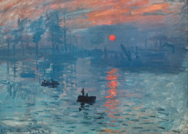
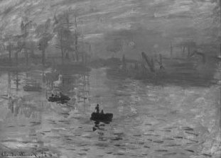
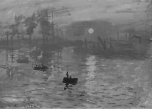
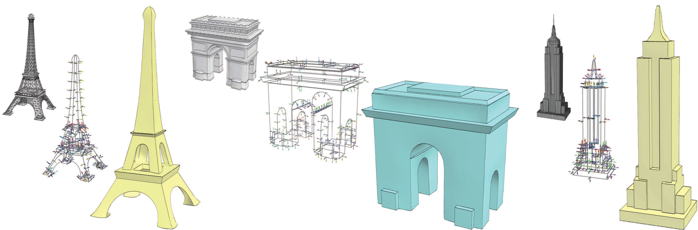

Research interests
What I have been trying to show
The thread through the work is salience: which differences in a scene, a model, or a dataset should remain visible after the representation changes.
Massive data, on ordinary machines
The ViSUS software was designed around a simple claim. Visualization of massive data does not have to be tied to specialized hardware or infrastructure. A visualization environment for large data can be lightweight, highly scalable, and able to run on a variety of platforms. As chief operations officer I lead commercialization and development of the ViSUS and ViSOAR products and coordinate the work with our collaborators at universities and national laboratories.
The recent papers are about access as much as they are about rendering. With colleagues on the National Science Data Fabric, the work covers web visualization of petascale data, a FAIR framework for analysis, training that uses those services, climate analysis that trades a measured error for a large drop in cost, and the release of a community dark-matter calibration dataset in an open multiresolution format. The shared aim is that a scientist, a student, or a collaborator outside the original instrument team can open the data and see it.
A longer list of those papers is on the papers page.
Illustration, color, and perception
Before ViSUS, the same question showed up in pictures. Computer graphics usually maps the color and intensity at a point in a scene to a pixel on a display. People also sense position, orientation, texture, shape, edges, and motion, and they judge those qualities by comparison with what is nearby. A photorealistic image is one kind of mapping. Technical illustration, caricature, and a careful grayscale image are mappings that keep some of those differences and let others go.
My master’s thesis, with Peter Shirley and Elaine Cohen, built an interactive illustration of NURBS models: silhouettes and edge lines drawn in the spirit of pen and ink, and a cool-to-warm shading of the interior so the black lines stay distinct. That shading is the model later called Gooch shading. Bruce Gooch and I wrote it up with Peter Shirley and Elaine Cohen for SIGGRAPH 1998, and Bruce and I later wrote the book Non-Photorealistic Rendering (A K Peters, 2001).
The dissertation, with Jack Tumblin, set the goal in one place: create perceptually salient images by expressing perceived differences in a scene as displayed differences in an image. Two of the cases were Color2Gray, a color-to-grayscale conversion that keeps visible color boundaries, and a method for finding pentimenti, an artist’s hidden revisions, by comparing an X-ray of a painting with a photograph of its surface. The Art Institute of Chicago conservation staff were collaborators on the painting work.



Default grayscale conversion can erase boundaries between colors of similar luminance. Color2Gray puts those perceived boundaries back into a gray image. Monet, Impression, Sunrise; color image courtesy of Artcyclopedia, as credited in the SIGGRAPH 2005 paper.
Related projects looked at whether the quality of computer graphics changes distance judgments in immersive environments, which cues tell a person that a virtual object is about to touch a surface, how to draw faces so they are learned faster than photographs, and how to abstract a manufactured shape down to the curves that identify it.

People
Advisors were Peter Shirley and Elaine Cohen at Utah, and Jack Tumblin at Northwestern. Long-running collaborators include Bruce Gooch, William B. Thompson, Sarah Creem-Regehr, Peter Willemsen, and, on the visualization work, Valerio Pascucci and the National Science Data Fabric team.
At the University of Victoria my graduate students included Jeremy Long, Anthony Estey, Ji Li, Ryan Wallace, and Shelley Gao, along with undergraduate researchers supported by NSERC and CRA-W. The group’s projects ranged from computational aesthetics and multispectral photography to games that teach a non-human visual system, including a cat-vision simulation and a bee-vision game.